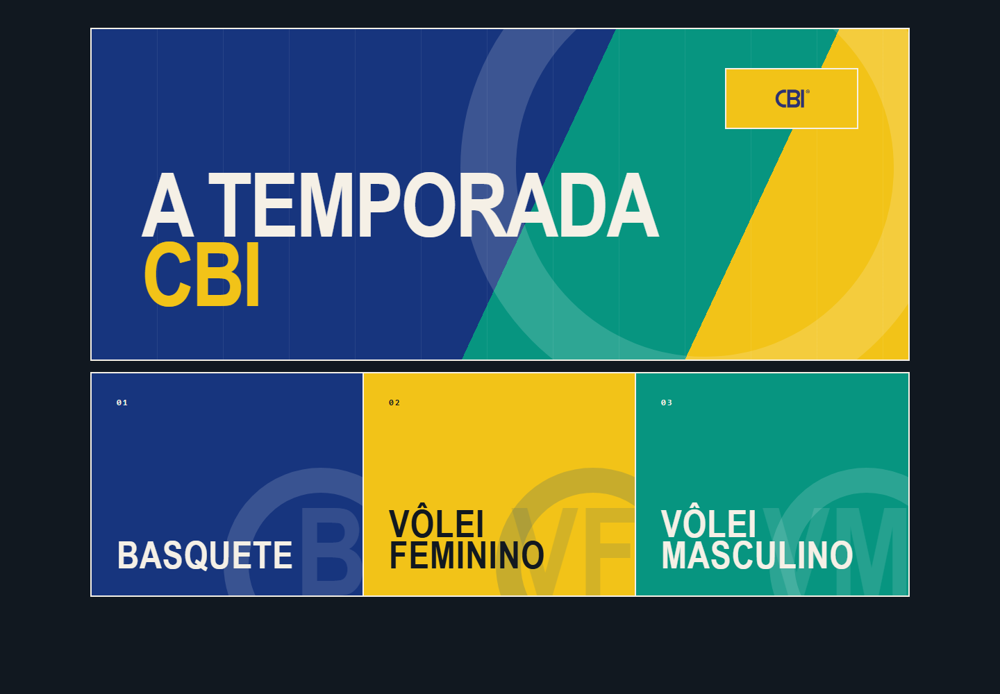

A Temporada
Atividade sobre decisões de uma comissão técnica que passou a incluir campanhas de basquete e voleibol. A versão Interclubes está em validação.

Sobre o projeto
A Temporada nasceu do meu trabalho com psicologia do esporte. A primeira versão era uma atividade simples: os atletas deixavam por um momento o papel de jogadores, assumiam uma comissão técnica e precisavam montar um elenco, escolher critérios e conversar sobre decisões que nem sempre agradavam todo mundo. Eu queria que assuntos como liderança, responsabilidade e construção de equipe pudessem ser experimentados, e não apenas discutidos.
Com o tempo, o projeto cresceu e deu origem ao A Temporada: Interclubes, que venho chamando de versão CBI. A ideia deixou de ficar concentrada em uma única atividade e passou a acompanhar competições, partidas e temporadas. Hoje já existem experiências jogáveis de basquete e voleibol, com escalações, substituições, rotações, classificações e continuidade do elenco. Antes de uma partida, também é possível estudar o adversário, comparar formações e pensar em intervenções sem transformar pessoas em uma nota ou em um ranking simplificado.
Essa evolução mudou também a forma como cuido do projeto. Passei a registrar decisões, separar melhor o que foi observado da interpretação feita pelo jogo e criar testes para conferir se campanhas e partidas continuam funcionando depois de cada alteração. A parte automatizada já passou por uma auditoria extensa, mas o estudo com jogadores reais ainda está pendente. Prefiro deixar isso claro porque a versão CBI está bem mais completa, mas continua sendo um projeto educacional em desenvolvimento.
Notas de desenvolvimento
- Fazer uma atividade pequena crescer sem perder a ideia que deu origem a ela.
- Representar decisões do esporte sem reduzir atletas a números ou rankings.
- Criar testes para acompanhar campanhas, partidas e mudanças feitas ao longo do projeto.
Ferramentas
- HTML
- CSS
- JavaScript
- Jogos no navegador
- Testes automatizados
- Playwright
- Psicologia do esporte